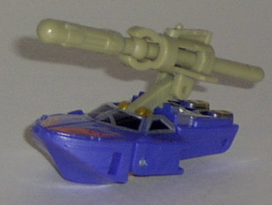

Oceanglide
Oceanglide
Difficulty of Transformation : Very Easy
Color Scheme : Dark watery blue, silver, dulll gold, light pale brown, shiny bluish white, and some gold-yellow and light red
Individual Rating : 6.5
Sea
Team Redeco
Allegiance
: Minicon
Size
: Mini-Con (3-pack)
Team Gimmick
: Ability to each fire
a projectile
Overall Rating
: 7.9
(NOTE: Because this set is a repaint, this
is not a full-blown review. This mainly covers any changes made to the
mold and the color scheme, and merely compares it the original Sea Team.
For a review on the mold itself, read the review of the original Sea Team
here
.)
Oceanglide
Difficulty of Transformation
: Very
Easy
Color Scheme
: Dark watery blue,
silver, dulll gold, light pale brown, shiny bluish white, and some gold-yellow
and light red
Individual Rating
: 6.5
The new Oceanglide looks
really awesome- well, at least when it comes to his color scheme, which
is really all you can expect from a repaint. Anyways, the watery blue,
silver, and gold go together extremely well, and is much much MUCH more
suiting for a boat than Oceanglide's previous color scheme. The flame deco
on the front is also gives it some extra pizzaz to boot. The light pale
brown doesn't go QUITE as well with the other colors as the rest of the
scheme, but it's certainly not bad. Definitely an improvement color-wise
over the original Oceanglide.
No mold changes have
been made to Oceanglide.
Stormcloud

Difficulty of Transformation
: Very
Easy
Color Scheme
: Dark watery blue,
dull gold, light pale brown, silver, and some light red and shiny black
Individual Rating
: 8.9
Just like Oceanglide,
Stormcloud's new color scheme is quite an improvement over the original-
and the ORIGINAL looked cool, which gives you an idea of how awesome this
guy is. The blue, silver, and gold go together just as well as they do
on Oceanglide, and there's also a bit of black this time to throw even
more into the mix. Again, the flame decos on the front are great, although
the light pale brown isn't exactly the cream of the crop like the rest
of the colors. Considering that one of the greatest Minicon molds of them
all now has one of the greatest color schemes of them all... well, that
makes Stormcloud my favoritest Armada Minicon. Hot dang.
No mold changes have
been made to Stormcloud.
Waterlog
Difficulty of Transformation
: Very
Easy
Color Scheme
: Dark watery blue,
light pale brown, silver, and some gold-yellow
Individual Rating
: 8.4
Although he doesn't have
the flame deco on the front like his teammates, Waterlog's color scheme
is still every bit as cool. Just like on the previous two, the color scheme
is excellent, with the exception of the light pale brown, which still isn't
bad. I also REALLY like all the silver this version of Waterlog has, especially
on his arms and on the top of his chest. The gold-yellow windows are also
neat. Just like his brethern, this Waterlog is an improvement over the
original version.
No mold changes have
been made to Waterlog.
Every single one of the new Sea Team's members is a sizable improvement over the original versions, so it's a no-brainer that I'd recommend the redeco version of the Sea Team over the original one. And, when you add up all the awesomeness that is the Sea Team redeco, they become my favorite Armada Minicon Team of them all. Definitely worth being picked up by any Transfan.
No Stats
Review by Beastbot